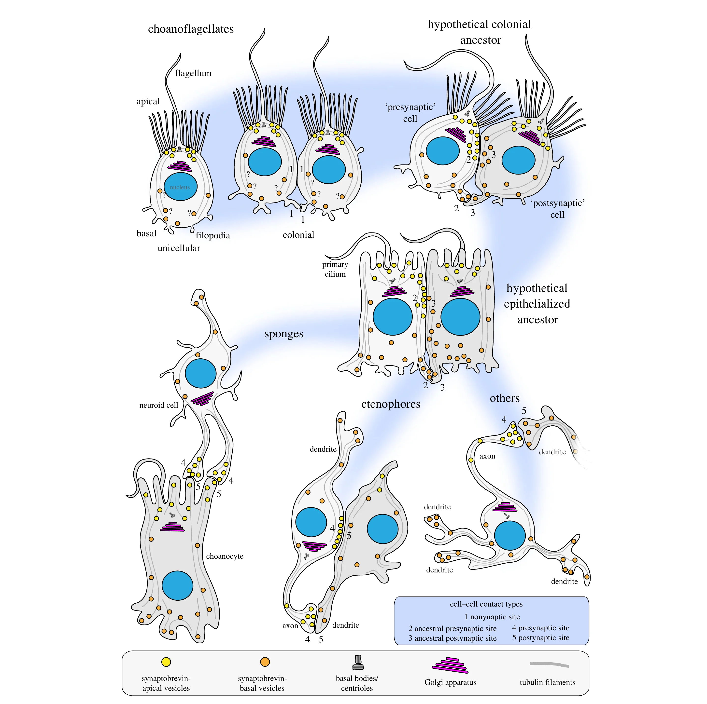

シドニーの海を潜りながら、テニスボールほどのタコに出会う哲学者がいる。彼が指を一本差し出すと、タコの腕がゆっくりとほどけて伸びてきて、吸盤が指を掴む。数十の吸盤の一つ一つに、数百のセンサーがあり、腕は指を「味わい」ながら、そっと引き寄せている。
この哲学者、ピーター・ゴッドフリー＝スミスは、シドニーの海に通い続けてタコとコウイカ（cuttlefish）を観察しながら、心の起源を考えた。前号の末尾で、生き物の内側もまた集団知性に溢れているのではないかと書いたが、この問いを彼の著作とともに今回と次回に分けて深掘ってみたい。そもそも神経系とは、何なのか。
本連載で確認してきたように、単細胞の生き物たちは互いを化学物質で感知し合っている。第2回で見たクオラムセンシング（自分たちが作り、かつ感知する分子で、仲間の数を測る仕組み）がそれだ。たとえば、ハワイのダンゴイカに棲む発光細菌は、この分子を感知するほど多く作り、仲間が十分いるときにだけ、いっせいに光る（『タコの心身問題』原題 Other Minds、2016）。前号の粘菌が集合に使った cAMP も、まさにこの種の「あいだの通信」だった。
ゴッドフリー＝スミスによれば、多細胞が生じたのは、分裂したあとの細胞同士が離れそこねたことから始まったという。離れそこねた細胞にとって「環境」は大部分が他の細胞になる。外の環境を感知するための手段がそのまま、同胞たちが何を「言って」いるかを感知する手段になったのだ。あいだの通信は消えたのではない。境界が動いたことで内側の通信に変わっただけだ。群れが体になった瞬間である。
もっとも、細胞の塊が体であるためには２つの調整が要る。１つは、体そのものを作るため、細胞どうしが信号を送り合って分業関係を決めていくもの。もう１つは、できあがった体を動かすものである。「ごく一部を除くすべての動物で、いくつかの細胞のあいだの化学的相互作用が、神経系の基盤になる」のだ。
なぜ化学信号だけでなく電気信号、つまり神経系も生じたのか。もちろん進化史上、突然姿を現したわけではない。神経を構成するニューロンもひとつの細胞だ。そして細胞のなかを電気が走る仕組み（電位依存性イオンチャネル）は、およそ30億年前の細菌に現れて以来あらゆる生物にあった。ニューロンどうしが連携する接合部、シナプス（片方の岸から化学物質が放たれ、向こう岸がそれを受け取る隙間）の骨組みも、6億年以上前に動物の系統と分かれた単細胞生物である襟鞭毛虫（Choanoflagellate）がすでに持っている。いま「シナプスタンパク質」と呼ばれているもののほとんどは、シナプスが生まれるより前から、別の仕事をしていた（Burkhardt, J Exp Biol, 2015）。逆に、シナプスを持つ動物だけに限られる分子はごくわずかで、その代表がシナプスの場所を決めることに専従する接着分子だが、それさえも、あらゆる生物が持つ酵素が変形して役割を変えたものだという。

出典:Göhde R. et al. (2021)「Choanoflagellates and the ancestry of neurosecretory vesicles」Phil. Trans. R. Soc. B 376: 20190759, Figure 4 より。CC BY 4.0

とはいえ、こうした素材があるだけでは神経系が生じた理由には足りない。なぜ必要とされたのか。長らく自明とされてきた答えは、感覚運動説である。神経系は、外の出来事を「感じる」ことと、応じて「動く」ことのあいだを橋渡しするために生まれた、という見方だ。だが、これは行為できることを前提してしまっている。単細胞生物にとって「動く」は簡単かもしれないが、多細胞生物にとってはそうはいかない。例えるなら、大勢の漕ぎ手が乗った舟に近いものがある。タイミングが揃わなければ、舟はどこへも進まないだろう。誰かが「せーの」と掛け声をかける必要がある。神経系はまず、そのためにあったのではないか。これは行為形成説と呼ばれている。
ゴッドフリー＝スミス自身は、どちらの説も重要だと考える。先の例でいえば、舟で掛け声をかける舵手（コックス）は漕がないが、舟がどこへ向かっているかを見ながら（感覚運動）、同時に、ミクロな行為の協調をとっている（行為形成説）。同様に、神経系も外側の出来事を感じながら、内側の協調を整えているのだ。進化史的にみれば「ごく最初の神経系は主として行為を協調させるのに役立った。…だが、そのような時代があったとしても、カンブリア紀にはそれは終わっていた」だろうという。外敵に反応しないと捕食されてしまうからだ。これは神経系を維持する十分すぎる理由だろう。「ニューロンを動かし維持するには大量のエネルギーが要る」のだが、それを差し引いて余りあるほど生存には欠かせなかったのである。
こうして、細胞の「あいだ」が内側に移り、そしてニューロンとなった。いわば、集合しっぱなしになった群れのいまも続く会話が、動物の行為を可能にしているのだ。こう考えると、「集団知性」と「個体知性」の境界は曖昧になってくる。逆に、われわれが普段「知性」と呼んでいるものは、そもそも「集団」知性なのだとさえ言えるのではないか。
そう考えると本来的に、内外の区別は自明ではない。そして実際に、外を「感じる」というとき、その刺激が身体の内側か外側のどちらからきたかを峻別するという単純な話ではないのである。動物には動くがゆえ、自らの行為が感知する内容を変化させてしまうからだ。『メタゾア』（原題 Metazoa、2020）でゴッドフリー＝スミスが挙げるのは、テッポウエビの触角である。体長の数倍もある触角は、自分がうろつくだけで、始終なにかにぶつかる。そこでエビは、いま自分がしていることから予期される感覚の変化を割り出し、それを超えたぶんだけを「外で何かが起きたしるし」として拾うのである。自己と世界の境界は、こうした仕分けの結果として、初めて生まれるのだ。私たちの目も同様だ。視線を動かしても世界が動いて見えないのは、行為の指令の「写し（efference copy）」を知覚系に送り、自己起因のぶんを差し引いているからである。
つまり、環境を感知するということは、感知している環境の「写し」を内側に持つことなのだ。その「写し」は、自ら動いた場合にどう刺激が変わるかという予測も含まれている。ゴッドフリー＝スミスはここに「主観」の萌芽を見ている。自らの行為の結果をシミュレートできるということだからである。私はこれを読んで、これまでぼんやり想像していたことが、はじめて輪郭を得たような気持ちになった。知覚して応答できるということこそが、主観を持つことなのだとしたら、ミジンコにはミジンコの、植物には植物なりの主観があるといえるだろう。
さて、人が言語を習得するのも、同じ原理だとしたらどうだろうか。ヴィゴツキーが述べたように、子供は他人との会話という「あいだの通信」を、内言に変えて自らのものにする。ふだん意識しないが、発話は出力であると同時に入力だ。言葉という外界の刺激と同じ発話をすることができるようになると、やがて声に出さなくても、頭の中で文が「聞こえる」。話す指令を組むとき、その指令の「写し（efference copy）」が、かすかな聴覚像を生むからだ。こうして組み上がった内なる文は、耳で聞いた文と同種の処理にさらされる。これがやがて思考の道具となるのは想像に難くない。新しいプラグマティズムの議論を持ち出さずとも、ここまで来れば、われわれが普段「知能」と呼んでいるものまでの道のりが一本の線でつながりそうだ。
プロジェクトを知能と捉える観点も、この線の先にあるのではないか。チームが育つとは何だろう。それは細胞の「あいだの信号」が内部に移ったように、個人間のやり取りが内側になることに他ならない。内側になるということは、外側の信号と区別できるということであり、それはチームとして動いた結果を予測するような環境の「写し（efference copy）」を得ることに他ならない。その「写し」は、喃語の発声と同じように、行為にならない行為の結果を見ることを繰り返して獲得するしかないのだろう。それがすなわち、チームの「主観」が育つということなのかもしれない。
ただ、これを安易にわれわれの主観と結びつけて理解した気になるのだとしたら危うい。ゴッドフリー＝スミスが「他なる心（Other Minds）」と呼んだ、ニューロンの過半数を脳ではなく八本の腕に置いたタコを通じて、次回は「他なる」知性のあり方を探索してみよう。